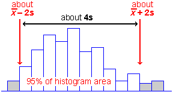
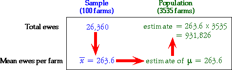
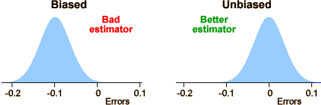

If you don't want to print now,
Signal and noise
Electronics and telecommunications engineers distinguish between the signal that is being communicated between two locations and the random noise that is added by the communications channel. The noise degrades the signal and, in the worst cases, can make the signal difficult to detect.
The word "CAST" is hard to read in the following noisy image.
Audio equipment often quotes its signal-to-noise ratio as a measure of quality. Noise again deteriorates the signal — the 'perfect' music that you want to hear.
Signal = information you want
Noise = 'random' modification to the signal
The concepts of signal and noise also apply to data sets.
Reasons for variability
Most statistical data sets contain measurements from a collection of 'individuals'. These individuals are not identical so measurements made from them also vary from individual to individual.
Even when the 'individuals' are very similar, recorded measurements from them often vary due to:
Intentional differences
In experiments, different 'individuals' are given different experimental treatments with the intention of comparing these treatments. We hope to find whether changing the experimental treatment causes differences in the measurements.
| Yield | Group |
|---|---|
| 6.57 6.53 4.71 5.32 6.15 5.08 6.17 4.93 3.16 4.57 6.13 7.49 6.00 4.84 9.01 6.11 5.55 5.48 6.84 6.18 |
No fertiliser No fertiliser No fertiliser No fertiliser No fertiliser No fertiliser No fertiliser No fertiliser No fertiliser No fertiliser Fertiliser Fertiliser Fertiliser Fertiliser Fertiliser Fertiliser Fertiliser Fertiliser Fertiliser Fertiliser |
Signal and noise in experimental data
In experimental data sets, the variability caused by different experimental conditions is the signal in the data since the intention of the experiment is to determine the effect of these differences.
However the signal in the data is usually obscured by the natural variability in the data — the noise in the data set.
In the experimental data on the right, it is difficult to assess whether the fertiliser has increased plant yield because of the natural variability between plants.
| Statistics tries to estimate the signal from data that also contain noise. |
Surveys
Some types of data are obtained from experiments. In experiments, we actively change some characteristics of each individual — choosing an experimental treatment.
Other types of data are obtained by selecting a sample of individuals in some way and simply recording information about them — a survey.
Summarising data
Survey data sets are often large and are summarised by numerical
values called summary
statistics.
Natural variability between individuals means that summary statistics must be considered as random quantities — similarly collected data would result in different values.
A important role of statistics is to understand and describe the randomness of such summary statistics.
Generalising from data
Most data sets do not arise from randomly sampling individuals from a finite population. However we are still rarely interested in the specific individuals from whom data were collected.
The recorded data are often 'representative' of something more general.
The main aim is to generalise from the data.

Randomness of data
Not only do we usually have little interest in the specific individuals from whom data were collected, but we must also acknowledge that our data would have been different if, by chance, we had selected different individuals or even made our measurements at a different time.
We must acknowledge this sample-to-sample variability when interpreting the data. The data are random.
All graphical and numerical summaries would be different if we repeated data collection.
This randomness in the data must be taken into account when we interpret graphical and numerical summaries. Our conclusions should not be dependent on features that are specific to our particular data but would (probably) be different if the data were collected again.
The more data that we collect, the more accurately our data will reflect population characteristics, but randomness always exists.
Data that are not sampled from a finite population
There is no real finite population underlying most data sets from which the values can be treated as being sampled. The randomness in such data must be explained in a different way.
Sampling from an abstract population
"Random sampling from a population" is also used to explain variability even when there is no real finite population from which the data were sampled.
We imagine an abstract population of all values that might have been obtained if the data collection had been repeated. We can then treat the observed data as a random sample from this abstract population.
Defining such an underlying population therefore not only explains sample-to-sample variability but also gives us a focus for generalising from our specific data.
Sampling from a population
Sampling from an underlying population (whether finite or infinite) gives us a mechanism to explain the randomness of data. The underlying population also gives us a focus for generalising from our sample data — the distribution of values in the population is fixed and does not depend on the specific sample data.
Unknown population
Unfortunately the population underlying most data sets is unknown and, in practice, we only have a single sample. However this single sample does throw light on the population distribution.
The diagram below describes a sample from a categorical distribution. Although the underlying population is unknown, the sample proportion of successes, p, is an estimate of the unknown proportions of successes in the population (denoted by π).

Simple measures of spread
These are (relatively) easy to understand and explain to others, but neither are commonly used.
Standard deviation
The standard deviation is a 'typical' distance of values from the sample mean.

The standard deviation is denoted by the letter s and is defined by:

The numerator,  , depends on the distances of the values to the mean, so it will be small if the values are all close to the mean and big if they are far from the mean.
, depends on the distances of the values to the mean, so it will be small if the values are all close to the mean and big if they are far from the mean.
Variance
The square of the standard deviation, s2, is called the sample variance. Variances are sometimes reported and used but standard deviations are easier to interpret since they have the same units as the original data (e.g. kilograms or dollars).
'Quarter-range' rule of thumb
For many data sets, the standard deviation is just under a quarter of the range.
 |
This is a simple rule, but is only very approximate. The standard deviation can be more than a quarter the range in distributions with short tails or much less if there are long tails or outliers.
The 70-95-100 rule of thumb
The 70-95-100 rule is more accurate. In many distributions,
The 70-95-100 rule holds approximately for most reasonably symmetric data sets, but for skew data or distributions with long tails, outliers or clusters, it is often less accurate.
Understanding the definition of the standard deviation is much less important than knowing its properties and having a feel for what its numerical value tells you about the data.
Guessing s from histogram
About 95% of the values should be within 2s of the mean, so after dropping the top 2.5% and bottom 2.5% of the values (histogram area), the remainder should span approximately 4s. Dividing this range by 4 should approximate the standard deviation.

Sketching a histogram from the mean and s
Similarly, you should be able to draw a rough sketch of a symmetric histogram with any mean and standard deviation that you are given. (It would be centred on the mean and 95% of the area would be within 2s of this.)
The shape of a distribution
| The mean and standard deviation hold no information about the shape of a distribution, other than its centre and spread. |
Many different distributions have the same mean and standard deviation.

Clusters, outliers and skewness are important features of a data set and should influence the analysis that you perform and the conclusions that you reach. In particular, if you ignore outliers or clusters, you could easily reach the wrong conclusions.
| It is therefore essential that you look at a graphical display of a distribution before summarising with a mean and standard deviation. |
Exercises are only available online.
Exercises are only available online.
Exercises are only available online.
Inference about a population
Data are usually collected to provide information about some population or process underlying the data. The data are often modelled as a random sample from this population.

More generally, inference is applicable to any situation where data are obtained through a random mechanism. We may understand some aspects of the process that generated the data (our model for the data-collection process), but other aspects of this process must usually be estimated from data that have been collected — inference.
Estimating parameters
Because of the limited amount of sample data available, we usually restrict attention to a few specific numerical characteristics of the population distribution — parameters.
After identifying the population parameters that are of most interest — for example the distribution's mean, µ, or the proportion of values in a category, π, — we can usually estimate these values using the corresponding summary statistics from the sample. This is called inference about the parameter.

HIV infection rates
Researchers in the late 1980s collected data from a sample of 4,955 homosexual men in Baltimore, Chicago, Los Angeles and Pittsburgh. We can estimate the proportion infected by the HIV virus in all homosexual men in these four cities with the sample proportion of infected men (1,883 out of 4,955)
 = p = 1883/4955 = 0.380
= p = 1883/4955 = 0.380
Ewes in region
An official from the Ministry of Agriculture wants to estimate the average number of ewes in a region's farms that are available for lambing in the spring. Data were collected from a random sample of 100 farms from the 3,535 in the region.
There was a total of 26,360 ewes in the sampled farms, so the mean number of ewes per farm was 263.6. This provides an estimate of the average in the whole region,
 =
=  = 263.6 ewes
= 263.6 ewes
It also allows us to estimate the total number of ewes in the region,

Comparing beers
A brewery wishes to assess the effect of an additive on the alcohol content of its premium beer. Several batches are brewed, both with and without the additive, and the alcohol content of each batch is recorded.
Here there are two underlying populations — distributions describing the alcohol content of beer with and without the additive. The shapes of these distributions could potentially differ in various ways, but the brewer is mostly interested in whether the additive changes the mean alcohol content:

The sample means provide estimates of the corresponding population means and are the basis for answering the question.
The difference in sample means is an estimate of the difference between the unknown population means.
Error in an estimate
When we use a summary statistic from a random sample to estimate a population parameter, the estimate will usually not be exactly the same as the parameter. The error is the difference between the parameter and its estimate.
| Parameter | Sample statistic | Error |
|---|---|---|
| population mean, µ | sample mean, |
|
| population proportion, π | sample proportion, p | p - π |
Silkworm poisoning
Silkworms must be killed after spinning their cocoons since the silk is damaged when the moths break free. An experiment was conducted to estimate the mean survival time of silkworm larvae after poisoning with sodium arsenate.

Since we are not interested in the specific 80 silkworms, we estimate that the population mean survival time is 272.6 seconds.
How big is the estimation error likely to be?
Error distribution
When a sample statistic (such as  or p ) is used
to estimate a population parameter, (µ or π)
there is an error,
or p ) is used
to estimate a population parameter, (µ or π)
there is an error,
error = (estimate - parameter )
Since the error depends on random sample data, it is a random quantity and has a distribution,

Although we cannot determine the actual error when there is only a single sample, it is often possible to find properties of its distribution.
For many types of estimate, we can find the error distribution or an approximation to it.
Target of small errors
Consider two possible sample statistics that could be used to estimate the centre of a symmetric population distribution — the sample mean and sample median. For each, there is an error,
error for mean =  - µ
- µ
error for median = median - µ
The best estimator will be the one whose estimation erro is usually "closer to zero". This corresponds to two desirable characteristics of the error distribution.
Centred on zero
Ideally, we want the error distribution to be centred on zero. Such an estimator is called unbiased.

Sample means and proportions are unbiased estimators of the corresponding population parameters.
Small spread
Ideally, we also want error distribution to be tightly concentrated on zero — i.e. to have a small spread.

We call the standard deviation of the error distribution the standard error of the estimator. We ideally want an estimator with a small standard error.
standard error = standard deviation of the error
Note also that
standard error = standard deviation of the estimator
so a good estimator is one with a small standard deviation.
Describing accuracy with an interval estimate
Reporting a single value as a parameter estimate (a point estimate) does not convey any information about the estimator's accuracy — i.e. the likely size of the estimation error.
It is better to give an interval of values within which we are confident that the parameter will lie — an interval estimate.
Will an interval estimate include the actual parameter value?
If an interval estimate is too narrow, there will be very little chance of it containing the true parameter value, but intervals that are too wide do not convey much information.

We will later describe how to quantify this idea of "confidence".
Exercises are only available online.